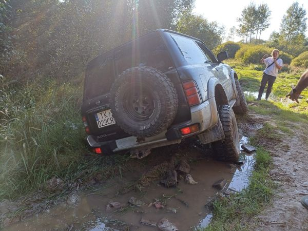

Najczęstsze pytania
Jeśli czegoś tu brakuje — zadzwoń pod 696 477 646. Szybciej wszystko wyjaśnimy przez telefon.
Muszę umieć jeździć w terenie?
Nie. Trasę dopasowujemy do poziomu uczestnika, więc jeśli siadasz za kierownicą w terenie pierwszy raz — nie ma problemu. Przy imprezach i integracjach nauka jazdy w terenie jest częścią zabawy.
Czy to ja prowadzę, czy tylko jadę jako pasażer?
Prowadzisz Ty. Za kierownicą mogą usiąść również osoby towarzyszące, więc w grupie każdy może się przejechać.
Cena jest za osobę czy za auto?
Za auto terenowe — 350 zł za godzinę, 500 zł za dwie, 800 zł za trzy. W grupie dzielicie ten koszt między siebie.
[ILE OSÓB MOŻE WEJŚĆ DO AUTA W TEJ CENIE?]
Potrzebne jest prawo jazdy?
[TAK/NIE, JAKA KATEGORIA, OD JAKIEGO WIEKU]
Czy dzieci mogą jechać?
[OD JAKIEGO WIEKU, JAKO PASAŻER, ZGODA OPIEKUNA?]
Gdzie się spotykamy?
Jeździmy po Kielecczyźnie.
[MIEJSCE ZBIÓRKI — MIEJSCOWOŚĆ ALBO INFORMACJA, ŻE ADRES PODAJECIE PO REZERWACJI]
Ile trwa cała wizyta?
[CZAS JAZDY + INSTRUKTAŻ + PRZERWY — ILE ŁĄCZNIE TRZEBA ZAREZERWOWAĆ]
Co powinienem ze sobą zabrać?
[UBRANIE NA ZMIANĘ, BUTY, RĘCZNIK, COŚ JESZCZE?]
A jeśli będzie padać?
[JEŹDZICIE W DESZCZU? ZIMĄ? CO PRZY ODWOŁANIU Z POWODU POGODY?]
Co z ubezpieczeniem i ewentualnymi uszkodzeniami?
[JAKIE UBEZPIECZENIE, CZY JEST KAUCJA, CZY KLIENT ODPOWIADA ZA SZKODY]
Mogę się napić przed jazdą?
[ZAKŁADAM, ŻE ZERO TOLERANCJI ZA KIEROWNICĄ — POTWIERDŹ I DOPISZ, CZY PASAŻEROWIE MOGĄ]
Chcę kupić to jako prezent — da się?
Tak, mamy vouchery prezentowe. Sprawdzają się na urodziny, rocznicę i inne okazje, a trasę dopasowujemy do poziomu osoby, która przyjedzie. Szczegóły na stronie Vouchery prezentowe.
[JAK DŁUGO WAŻNY VOUCHER, JAK GO KUPIĆ I ZAPŁACIĆ]
Organizujecie imprezy firmowe?
Tak. Rywalizacja zespołów, zadania offroadowe, przeciąganie liną, quizy i nagrody. Ceny ustalamy indywidualnie, w zależności od wymagań i oczekiwań — napisz, ilu Was jest i co planujecie. Szczegóły na stronie Eventy firmowe.
Da się połączyć jazdę z noclegiem?
Po rajdzie można zostać w gospodarstwie agroturystycznym — ognisko, grill i jacuzzi. Szczegóły na stronie Agroturystyki Załawie.
[CZY OFERUJECIE PAKIET JAZDA + NOCLEG W JEDNEJ CENIE?]